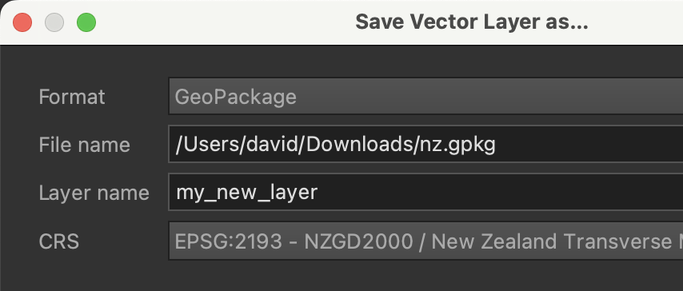

If there is one thing above all others to love about GeoPackages it’s this. When teaching newcomers, the standout advantage over shapefiles is simple: there is only one file, and not some number between three and seven (or is it eight? I’m just not sure).
I’ve lost count of how often I had to disable the increasingly hard to find Hide file extensions option on a baffled student’s computer to reveal the disturbing truth that there were several identical-except-for-the-extension files that together formed a so-called shapefile. Or how when supplying data for lab assignments I had to include instructions about unzipping files to a known folder and so on (a seemingly simple requirement made much more complicated by more recent releases of Windows allowing the user to look inside a .zip file without actually unpacking the contents…).
Understandable ATTRIBUTE_
What I meant to say was: understandable attribute_names because you can have attribute names longer than 10 characters.
Many layers
I’ve tended to shy away from packaging multiple datasets in GeoPackages as support for this feature has at times been uncertain and confusing.
Now that I am less beholden to not confusing beginners where ‘one file = one layer’ is a useful rule to live by, I’ve started to look more closely at what’s going on here. It still has the potential to confuse — especially in QGIS’s right-click Export → Save Features As… — but there is untapped potential here for making life easier when it comes to sharing bundles of related data with a minimum of fuss.
I’ll explain using my goto tool for general data wrangling, R’s sf package.
Multi-layer geopackages in R
Assuming you have a locally stored simple GeoPackage nz.gpkg, you read it using:
library(sf)nz <-st_read("nz.gpkg")
Reading layer `nz' from data source
`/Users/david/Documents/code/dosull.github.io/posts/2024-10-16-geopackages/nz.gpkg'
using driver `GPKG'
Simple feature collection with 1 feature and 1 field
Geometry type: MULTIPOLYGON
Dimension: XY
Bounding box: xmin: 1090144 ymin: 4748531 xmax: 2463348 ymax: 6191876
Projected CRS: NZGD2000 / New Zealand Transverse Mercator 2000
Now, if you’d like to add another dataset to that file, you can specify a layer to put it in. Before doing that, it’s probably best to check what layers are already there using st_layers():
st_layers("nz.gpkg")
Driver: GPKG
Available layers:
layer_name geometry_type features fields
1 nz Multi Polygon 1 1
crs_name
1 NZGD2000 / New Zealand Transverse Mercator 2000
As we might expect (and if you’ll excuse the awkward formatting due to the long crs_name) a single layer with the same layer name as the file itself. Say we buffer our data and want to store it back into the same file, then we can do the below, as long as we provide a new layer name to store it in:
Writing layer `coast' to data source `nz.gpkg' using driver `GPKG'
Writing 1 features with 1 fields and geometry type Multi Polygon.
And now we can see that both layers are present in the file:
st_layers("nz.gpkg")
Driver: GPKG
Available layers:
layer_name geometry_type features fields
1 nz Multi Polygon 1 1
2 coast Multi Polygon 1 1
crs_name
1 NZGD2000 / New Zealand Transverse Mercator 2000
2 NZGD2000 / New Zealand Transverse Mercator 2000
Now if you open this file in R unless you specify the layer you want, you’ll just get the first one:
st_read("nz.gpkg")
Multiple layers are present in data source /Users/david/Documents/code/dosull.github.io/posts/2024-10-16-geopackages/nz.gpkg, reading layer `nz'.
Use `st_layers' to list all layer names and their type in a data source.
Set the `layer' argument in `st_read' to read a particular layer.
Warning in CPL_read_ogr(dsn, layer, query, as.character(options), quiet, :
automatically selected the first layer in a data source containing more than
one.
Reading layer `nz' from data source
`/Users/david/Documents/code/dosull.github.io/posts/2024-10-16-geopackages/nz.gpkg'
using driver `GPKG'
Simple feature collection with 1 feature and 1 field
Geometry type: MULTIPOLYGON
Dimension: XY
Bounding box: xmin: 1090144 ymin: 4748531 xmax: 2463348 ymax: 6191876
Projected CRS: NZGD2000 / New Zealand Transverse Mercator 2000
and one of those warning messages it’s tempting not to read, but really should.
And that’s it really, for multiple vector layers in GeoPackages in R.
Multi-layer geopackages in QGIS
Meanwhile, if you open a two-layer GPKG in QGIS you’ll see this:
That’s pretty clear. What’s unfortunately less clear than in R is the sequence of operations that will safely add a layer to an existing GeoPackage. That’s not quite fair: what is unclear is the warning message you get if you choose an existing .gpkg file as the destination for a dataset you’d like to save. The warning message looks like this:
This seems pretty scary. Before trying this at home I suggest you make a copy of the target geopackage if you are worried about losing your data, but if you steel yourself, and against every instinct hit Replace, then as long as you set a different name in the Layer name option of the Save Vector Layer as… dialog

it will be fine, and you’ll end up with an additional layer in the target GeoPackage.
You can also manage the component layers of GeoPackages in QGIS’s Browser panel.
So if you can put many different layers in a GeoPackage, can you mix vector and raster datasets in there too?
Turns out you can, although, at least for R’s sf this is where things get a bit messy. terra is the package for dealing with raster data, so let’s load that and read in a raster dataset. Before doing that, I’ll clean up nz.gpkg so it only has one layer again:
Deleting source `nz.gpkg' using driver `GPKG'
Writing layer `vector' to data source `nz.gpkg' using driver `GPKG'
Writing 1 features with 1 fields and geometry type Multi Polygon.
Now load the raster layer
library(terra)nz_r <-rast("nz.tif")nz_r
class : SpatRaster
dimensions : 144, 137, 1 (nrow, ncol, nlyr)
resolution : 10000, 10000 (x, y)
extent : 1090144, 2460144, 4748531, 6188531 (xmin, xmax, ymin, ymax)
coord. ref. : NZGD2000 / New Zealand Transverse Mercator 2000 (EPSG:2193)
source : nz.tif
name : layer
min value : 1
max value : 1
Crowbarring this thing into our GeoPackage is certainly possible, but it’s far from intuitive, and involves invoking some GDAL options.
The GDAL options are all documented, but applying them using terra::writeRaster is finicky, and clearly this is not for the faint-hearted!
Furthermore… sf can’t ‘see’ the raster layer:
st_layers("nz.gpkg")
Driver: GPKG
Available layers:
layer_name geometry_type features fields
1 vector Multi Polygon 1 1
crs_name
1 NZGD2000 / New Zealand Transverse Mercator 2000
I guess if you don’t ‘do’ raster layers then there is no point in being able to see them either ¯\_(ツ)_/¯. terra is similarly see-no-evil about things and just reads in the raster layer that is in the file without commenting on other layers that might be present:
Overall, I’ve been aware that I can bundle raster and vector layers in GeoPackages like this but haven’t used the capability. In part because I’ve only just figured out how to do it using the R tools(!), but mostly because I prefer to keep raster data in GeoTIFFs and vector data in GeoPackages so I can tell which is which at a glance.
So, are GeoPackages perfect?
Of course not. There’s an argument to be made that every format that perpertuates the simple features paradigm is a bad as every other. I even wrote a book that is — kind of — all about this. It’s one of the mysteries of the evolution of geospatial that topology was embedded in the ‘standard’ formats, until it wasn’t. For what it’s worth, I think we have relational databases to blame for that.
There are also better formats for particular applications. GeoJSON is web-native in a way that GeoPackages never will be, and newer formats such as FlatGeoBuf and GeoParquet, and more recent approaches like Discrete Global Grids certainly have their place.
But in a world still dominated by relational DBMS, a geospatial format that is basically a wrapper around SQLite tables was almost certain to emerge eventually, and GeoPackages are that format. They’re vastly preferable to shapefiles, and it’s good to see them slowly (more quickly would be better) replacing them.
The shapefile is (almost) dead, long live the GeoPackage!


{kind=link}